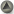

|
Model-Driven Software Development (MDSD) is becoming a widely
accepted approach for developing complex distributed applications. MDSD
advocates the use of models as the key artefacts in all phases of development,
from system specification and analysis, to design and testing. Each model
usually addresses one concern, independently from the rest of the issues
involved in the construction of the system. Thus, the basic functionality of the
system can be separated from its final implementation; the business logic can be
separated from the underlying platform technology, etc. The transformations
between models enable the automated implementation of a system from the
different models defined for it.
Web Engineering is a specific domain in which MDSD can be
successfully applied. Most of the technology is here to implement systems that
exploit the Web paradigm, but the effective design of Web applications is still
a concern. The complexity and requirements on Web applications are constantly
growing, while the supporting technologies and platforms rapidly evolve.
Existing model-based Web engineering approaches already provide excellent
methodologies and tools for the design and development of most kinds of Web
applications. They address different concerns using separate models (navigation,
presentation, data, etc.), and count with model compilers that produce most of
the application’s Web pages and logic based on these models. However, these
proposals also present some limitations, especially when it comes to modelling
further concerns, such as architectural styles or distribution. Furthermore,
current Web applications need to interoperate with other external systems, which
require their integration with third party Web-services, portals, portlets, and
also with legacy systems. Finally, most of these Web Engineering proposals do
not fully exploit all the potential benefits of MDSD, such as complete platform
independence, model transformation and merging, or metamodelling.
Recently, the MDA initiative has introduced a new approach
for organizing the design of an application into (yet another set of) separate
models so portability, interoperability and reusability can be obtained through
architectural separation of concerns. MDA covers a wide spectrum of topics and
issues (MOF-based metamodels, UML profiles, model transformations, modelling
languages and tools, etc.) that need to be yet solved. On the other camp,
Software Factories provide effective concepts and resources for the model-based
design of complex applications, and it is our belief that they can be
successfully used for Web Engineering. At the same time, and specifically in the
more data-intensive Web applications (usually called Web-based Information
Systems) we see a trend towards the incorporation of emerging technologies like
the Semantic Web, (Semantic) Web Services, and (Semantic) Web Rule Languages,
which aim at fostering application interoperability. Semantic Web languages (like
RDF(S) or OWL) facilitate the description of models for such. However, the
integration of all these models with the rest of the model-based Web Engineering
approaches is still unresolved.

Top
This workshop aims at providing a discussion forum where
researchers and practitioners on these topics can meet, disseminate and
exchange ideas and problems, identify some of the key issues related to the
model-based and model-driven development of Web applications, and explore
together possible solutions and future works.
The duration of the workshop is one day and will be held on
July 11, 2006.
Top
Topics of interest include, but are not limited to:
- Conceptual and data models for Web systems
- Model Driven Architecture (MDA) and other model-driven approaches (e.g.,
Software Factories) in the context of Web application development
- Potential problems or limitations of MDSD in the area of Web systems
- UML profiles for Web applications
- Web systems software architecture modelling
- Model-based Web design methods
- Model-driven code generation for Web applications
- Model and metamodel transformations in the context of Web Applications
- Interoperability models for Web applications and resources (Web pages,
Web services, portlets, distributed components, etc.)
- Tools for model-driven Web development
- Model-driven quality analysis of Web applications
- Maintenance, evolution and management of model-based Web systems
- Model-based approaches to design distributions aspects in Web systems
- Use of Semantic Web-based approaches in model-based Web design
- Ontologies in Web application design.
Top
To enable lively and productive discussions, attendance will be limited
to 25 participants and submission of a paper or a position statement is
required. All submissions will be formally reviewed by at least two
reviewers.
Submissions should be 4 to 10 pages long in
ACM Proceedings format
and include the authors’ names, affiliations and contact details. They should be
submitted by e-mail in PDF format before April 15, 2006, to the Workshop
Chairs (mdwe2006(at)lcc.uma.es).
Authors will be notified of acceptance by May 13, 2006. At least one
author of every accepted paper should register for the conference and
participate in the workshop. The workshop proceedings will be formally published
with ISBN, and will be made available on-line to the participants at least one
week before the workshop.
In addition, we are in cooperation with IEE Software considering to publish
extended versions of selected papers of the workshop.
Top
- Workshop papers due: 15 April 2006
-
Author notification: 13 May 2006
-
Final papers due: 10 June 2006
-
Workshop date: 11 July 2006
Top
-
Geert-Jan Houben Vrije Universiteit Brussel,
Belgium, and
Technische Universiteit Eindhoven, The Netherlands
-
Gustavo Rossi LIFIA Facultad de Informática Universidad Nacional de La Plata, Argentina.
-
Antonio Vallecillo ETSI
Informática, University of Málaga, Spain
Top
|
PROGRAM COMMITTEE (not complete yet) |
- Luciano Baresi Politecnico di Milano, Italy
- Sven Casteleyn Vrije Universiteit Brussel, Belgium
- Luis Ferreira Pires
University of Twente, The Netherlands
- Piero Fraternalli Politecnico di Milano, Italy
- Martin Gaedke University of Karlsruhe, Germany
- Jaime Gómez Universidad de Alicante, Spain
- Gerti Kappel Technische Universität Wien, Austria
- Nora Koch Institute for Informatics LMU,
and FAST GmbH, Germany
- David Lowe University of Technology of Sydney, Australia
- Maristella Matera Politecnico di Milano, Italy
- Pierre-Alain Muller INRIA, Rennes, France
- Alfonso Pierantonio Universita di L'Aquila, Italy
- Vicente Pelechano
Universidad Politécnica de Valencia, Spain
- Hans-Albrecht Schmidt FH Konstanz, Germany
- Daniel Schwabe PUC-Rio de Janeiro, Brazil
Top
|